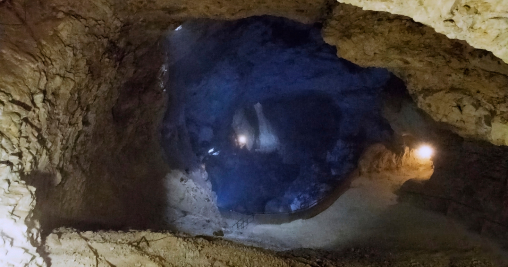
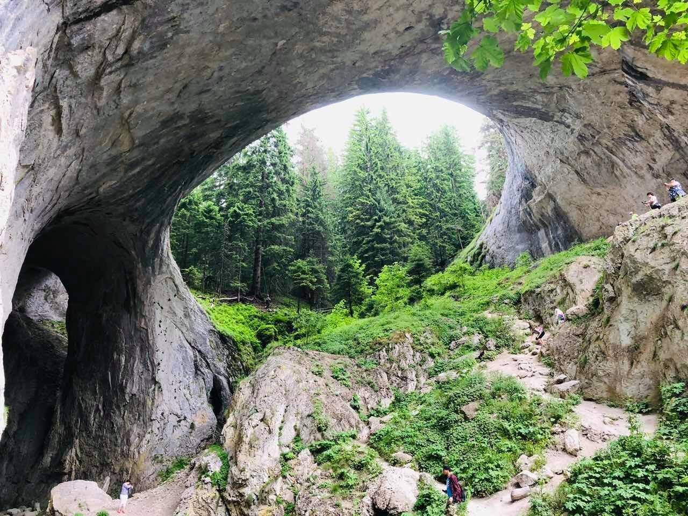

Bulgaria
Пещера "Дяволското гърло"

Дяволското гърло се намира в Западните Родопи, на 1,8 км северно от село Триград и на 17 км южно от град Девин. Това е една от малкото пещери, която не блести с изящни образувания. Това, което привлича и омагьосва хората, е възможността да се докоснат до истинска стихия, до частица от тайнствения и страшен подземен свят. Входът на пещерата, наподобяващ дяволска глава, в гърлото на която се излива огромен ревящ водопад, от дълбока древност подхранва човешкото въображение и поражда множество легенди.

Пещерата е пропастна и неразклонена. Водите на Триградската река се изливат в „гърлото” от височина 42 метра, като формират най-високия подземен водопад на Балканския полуостров. Заради оглушителния грохот, който се създава, залата с водопада е наречена Бучащата зала. Тя е огромна – втората по големина пещерна зала в България. На около 400 м от входа водите на реката се губят в сифон. Дължината на сифона е повече от 150 м, а след него по 60-метрова галерия подземната река напуска пещерата и излиза отново на повърхността през друга пещера.
